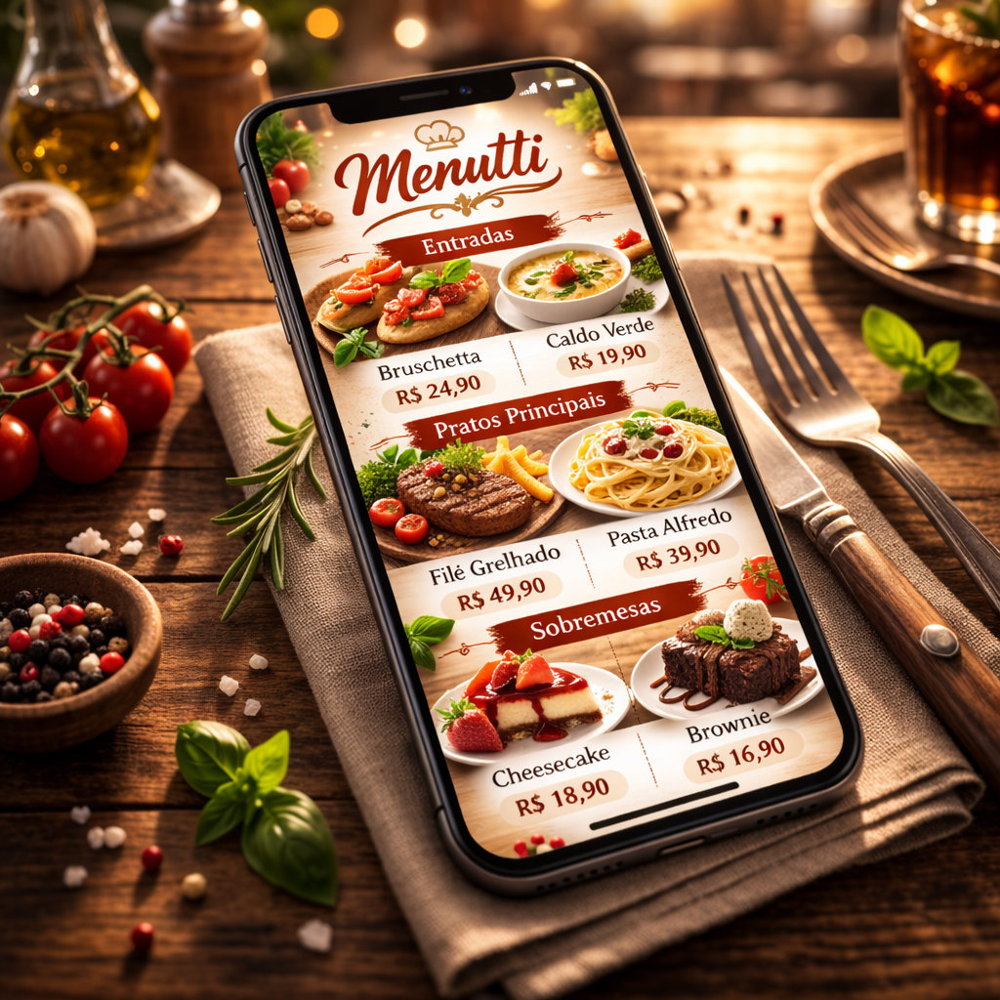

Detalhes

Projeto Menutti
O Projeto Menutti é um sistema de cardápio digital
criado para modernizar a experiência em restaurantes
e otimizar o atendimento.
Por meio de um site, o estabelicimento pode disponibilizar o cardápio em tablets próprios QR Code nas mesas. Assim, o cliente acessa o menu, faz o pedido de forma prática e sem a necessidade de chamar o garçom
Após a confirmação, o pedido é enviado automaticamente para a cozinha, enquanto a comanda é direcionada ao setor de pagamento. Isso facilitando tanto o trabalho da equipe quanto a experiência do cliente.
- Gustavo Teberga
- Thiago Alves
- Guylherme Martins
Por meio de um site, o estabelicimento pode disponibilizar o cardápio em tablets próprios QR Code nas mesas. Assim, o cliente acessa o menu, faz o pedido de forma prática e sem a necessidade de chamar o garçom
Após a confirmação, o pedido é enviado automaticamente para a cozinha, enquanto a comanda é direcionada ao setor de pagamento. Isso facilitando tanto o trabalho da equipe quanto a experiência do cliente.
Integrantes do Projeto
- Gustavo Teberga
- Thiago Alves
- Guylherme Martins